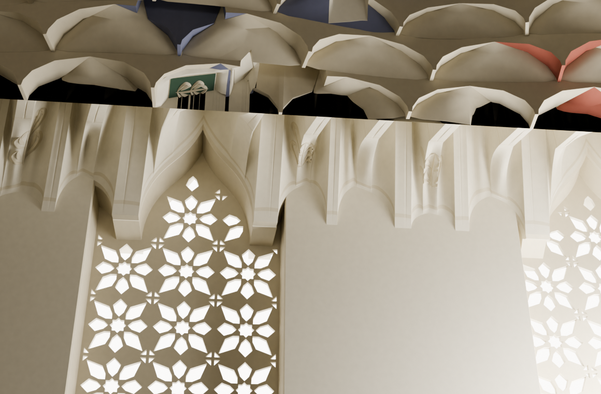
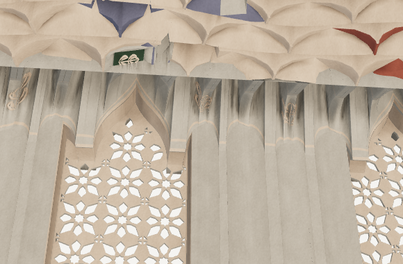

Estudio de yesería
Un encuadre del paño de Dos Hermanas.


Visita actualEstudio de luz y yeso
Es un ensayo de acabado propuesto. La geometría sigue simplificada y conserva encuentros abiertos visibles. Esta comparación no valida una restitución histórica ni un resultado hiperrealista.
Abrir el estudio completo del recorte · Ver ambas imágenes juntas